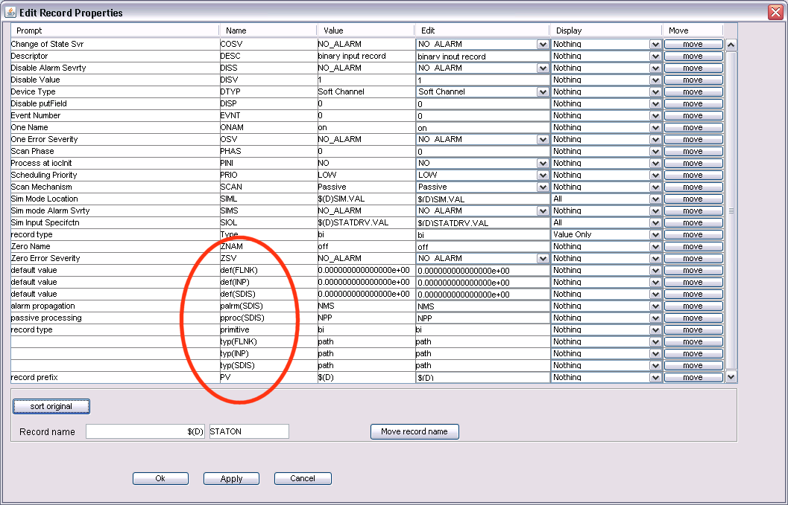
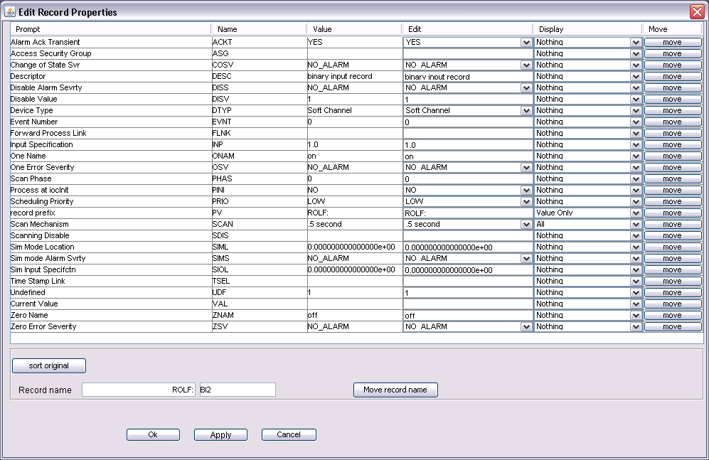
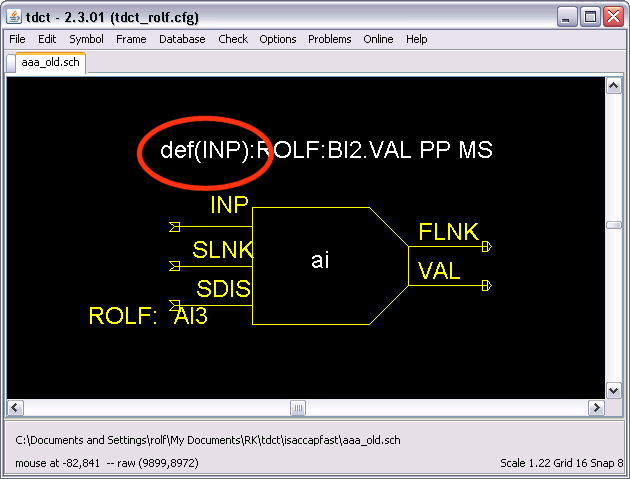
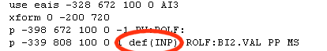
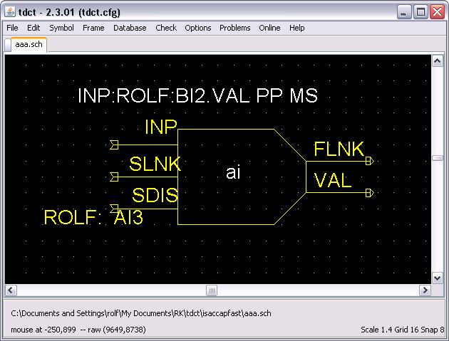
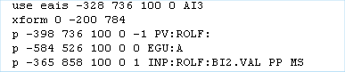
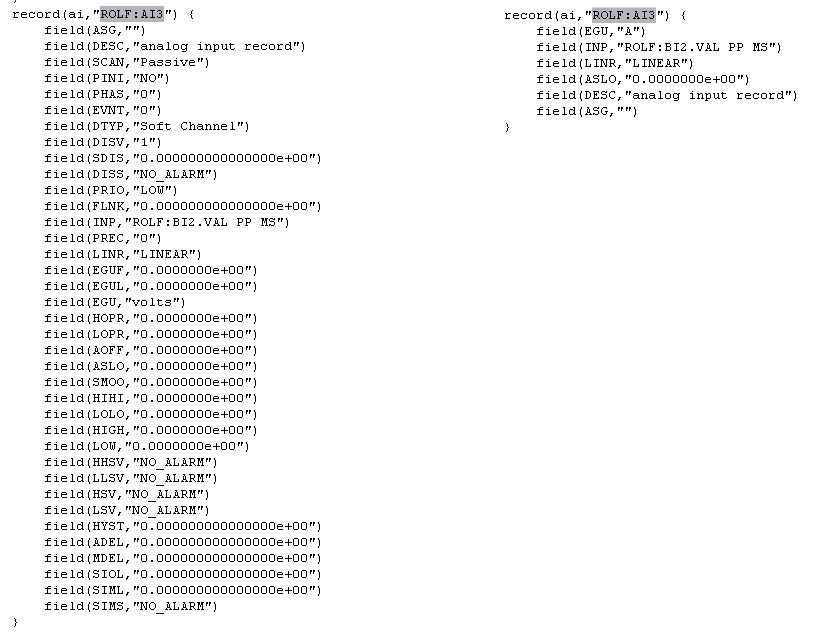

Compatibility
mode
DBD mode
Comparison of Modes
Property
Sheets
Schematic
Files
EPICS
Database
Link
Fields
Configuration
Conversion from Compatibility Mode to
Dbd Mode
Tdct supports two different modes of operation:
- Compatibility
mode
- Dbd mode
By default, Tdct runs in "Compatibility"
mode. In this mode
- schematics and symbols created by Capfast™ can be opened.
- the list of EPICS record fields and their default values,
which
can be modified by the user, is determined from the EPICS record symbol
properties.
- the string values for enumerated EPICS record fields of
type DBF_MENU are obtained from the EPICS dbd files.
- the edb.def file defines
- the mapping of symbol file names onto EPICS record types
- which EPICS record fields are written to the
database.
- schematics and symbols are saved in Capfast™ format and are
fully compatible with Capfast™.
- schematics, which were created in Dbd mode cannot
be opened.
Note that in this mode there is a disconnect between the symbol files
and edb.def which can lead to strange errors during database
generation. Symbol files define which record fields can be changed
interactively. edb.def defines which fields are written to the
database. Default values on EPICS record symbols override the default
values in edb.def.
In Dbd mode tdct fully parses the EPICS dbd files. In this mode
- schematics and symbols created by Capfast™ can be opened.
- the
list of EPICS record fields, which can be
modified by the user, is determined from the EPICS dbd files.
- default values for the EPICS record fields, which can be
modified by the user are obtained
- from the EPICS record symbol
- from the EPICS dbd files (if not specified on the symbol)
- the string values for enumerated EPICS record fields of
type DBF_MENU are obtained from the EPICS dbd files.
- EPICS database generation uses default values for EPICS
record fields from the EPICS record symbol
- the edb.def file defines the mapping of symbol file names
to EPICS record types.
- EPICS record fields for which default values are specified
in the
dbd files and not on the EPICS record symbol are not written
to
the database
- schematics are saved in a modified
Capfast™
format and are not readable by Capfast™.
- if
a schematic is loaded which was created in Compatibility mode, a
warning is issued and the user is prompted for confirmation before the
schematic is saved.
- symbols are saved in Capfast™ format and are
fully compatible with Capfast™.
Example of a property dialogue for a binary input record in
Compatibilty mode:

Example of a property dialogue for a binary input record in Dbd mode:

Analog input record on a tdct display and the corresponding section of
the schematic file in Compatibility mode:


Analog input record on a tdct display and the corresponding section of
the schematic file in Dbd mode:


Comparison of the corresponding sections of EPICS databases in
Compatibility mode (left) and Dbd mode (right):

Links between EPICS records are established by specifying the target PV
for an EPICS record link field.
If a record name, but no field name is given for the
target PV, the VAL field is targeted.
In addition, the link properties for passive processing (NPP PP CP CPP
CA) and severity transfer (NMS MS) can be specified for the link.
Default is NPP NMS.
In Compatibility mode,
links are specified by
- entering the link target PV name into the def(<link
field>) property of the EPICS record symbol or
- connecting symbol ports by wires
link properties are specified by
- adding the properties after the target PV (separated by
white space) or
- using the pproc(<link field>) and
palrm(<link field>)
properties of the EPICS record symbol. If the link is specified with a
wire, the link properties for passive processing and severity transfer
can also be specified by double-clicking on the wire-segment which
connects to the link field.
NOTE: in the EPICS record symbol set, which came with the Capfast™
distribution, there seem to be some inconsistencies. Not all links have
the pproc and palrm properties, and on some records the properties do
not get used properly when a database is built. We don't understand
this fully and generally work around with 3).
In Dbd mode,
links are specified by
- entering the link target PV name into <link
field> property of the EPICS record symbol or
- connecting symbol ports by wires
link properties are specified by
- adding the properties after the target PV (separated by
white space) or
- if the link is specified with a wire, enter the link
properties into the <link field> property, preceded by ---,
e.g.
--- PP NMS
or double-click on the wire segment which connects to the link port to open a dialog for modifying the link properties.
Capfast™
compatibility is controlled by a directive in the configuration file,
which can have the following forms:
[option]
dbdmode
[option] dbdmode
false
[option]
dbdmode true
If the directive is not present or present with the value false, tdct
operates in Compatibility
mode.
If the directive is present without value or present with the
value true,
tdct operates in Dbd mode.
Note:
This Conversion is a one-way street. Once a schematic is converted to
Dbd Mode, tdct cannot convert it back to Compatibility mode.
When
tdct operates in Dbd mode and reads a schematic which was saved in
Compatibility mode, the schematic is automatically converted to dbd
mode. A warning message is issued to the user in order to avoid
unintended conversion.
The conversion requires that two instances of EPICS record symbol
libraries are defined in the tdct configuration file:
- the symbol library for Dbd mode is defined with one or more
[epicslib] directives.
- the symbol library for Compatibility mode is defined with
one or more [epicslib_compat] directives.
- both directives may point to the same EPICS record symbol
library.
As
Dbd mode obtains the default values for EPICS record fields from the
dbd files, EPICS record symbols for dbd mode do not need to define any
properties with the exception of the "type" property which is used to
display the record type.
During the conversion of a schematic from Compatibility mode to Dbd
mode handles record properties in the following way:
- If the record has an instance property in Compatibility
mode, it will be retained as an instance property in Dbd mode.
- If
a symbol from the Compatibility mode EPICS library defines a
property for an EPICS record field and the property value is different
from the default value of the the dbd file, the property will be added
as an instance property to any record instance in the Dbd mode
schematic.
- default instance properties (such as def(INP),
def(pproc), ...) in Compatibility mode are converted to values of the
corresponding fields in Dbd mode.
This assures that the functionality of EPICS databases does not change
when tdct schematics are converted to Dbd mode.